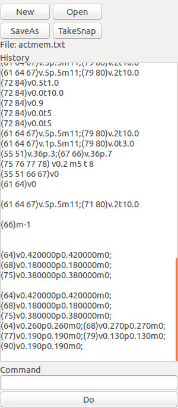

Actions Panel
Actions panel allows to do some actions on the oscillators without having to do them individually
-
Kill All - turn off immediately all the oscillators running (volume to 0.00 for all)
-
Volume Mul - apply multiplication factor selected to all the oscillators running
-
Event Edit - open the event editor
Event Editor

Event editor allows to perform actions on groups of oscillators.
It preserve all the commands applied in memory files; files are stored in the "save" folder.
When opened it load the last used memory file.
-
New - create a new empty memory file
-
Open - open a mamory file
-
SaveAs - save current memory file with name
-
TakeSnap - save the current active oscillators parameters
-
File: - indicates memory file in use
-
History - a scrollable list of all commands appied (read only to consult and copy in "Command")
-
Command - a textbox to write the command
-
Do - the button to launch the command written in "Command"
Commands
The basic command structure is:
(N1 N2...)vWWpXXmYYtZZ
where:
- NX is the corresponding number of the oscillator(s), oscillators numbers must be within brakets and separated by space
-
v is the switch to provide volume information to oscillators, if omitted volume will not be changed
-
WW is a number (range 0.0 - 1.0) to provide volume value to oscillators, if switch is omitted volume will not be changed
-
p is the switch to provide pan information to oscillators, if omitted pan will not be changed
-
XX is a number (range 0.0 - 1.0 / 0.5 is center) to provide pan value to oscillators, if switch is omitted pan will not be changed
-
m is the switch to provide modulation information to oscillators, if omitted pan will not be changed
-
YY is an integer (from 0 to the lenght of the dropdown menu list) to provide modulation value to oscillators, if switch is omitted modulation will not be changed
-
t is the switch to schedule in the future actions to oscillators, if omitted action will happen immediately
-
ZZ is an float to provide the time (expressed as ratio of the global BpM) at wich action will happen
Several oscillators group could be controlled with the same command, just put a semicolon between different actions group.
Example:
(55 66) v0.1p.1;(56 67) v0.1p.9
Back to main page